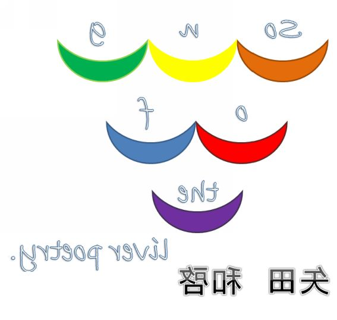

| song of the river poetry: 矢田和啓の第一詩集 | |
| 矢田和啓 | |
| Kazuhiro Yada (2016) | |
星
星が落ちるように
永遠も閉じるだろう
開くことのない瞼が
魂のように優しいだろう
星が落ちた後に
死者がつながるだろう
切り裂かれた布の時間が
巻き戻されるように
すべての比喩が生きている
死ぬ寸前まで
輝きを失わなかった
瞳の奥に映っていた星
今それらが消えて
また一つ横たわったものがある
もう看板のように
夕闇に浮かぶこともなくなった
小さな精読の向こう側に
光があったような
でもそれも新しく
作られたばかりだ
抽象から具体へ
風は
あなたをどのように気持ちよくさせるのか
それがわからないことには
僕のあなたに関する研究は続けられない
あなたがどんな酵素と反応するか
あなたがどんな電気信号に反応するか
そればかり考えている
あなたをどんなモダンへと連れて行くのか
あなたを導く道標に僕はなりたい
風の流れを読め
この迷宮の中で
愛するということは
その場に留まることではなく
先に進むことなのだ
酵素の構造も
電気信号の回路も
それらの一連の迷宮だ
わかるだろうか？ この研究の難しさが
難解な論文を咀嚼するように
僕はあなたを噛み砕く
こんな刺激的な表現であなたを傷つけやしないだろうか
いや大丈夫だきっと
僕は頷く
そしてあなたが頷くのをじっと待つ
どんな風があなたの首を傾げさせるだろう
愛しているということは
それを思うだけで十分だろうか
あなたの気象学は
何かを語ろうとしている
僕はそれに耳を傾ける
抽象から具体へ向かおうとする
その思考の運動が風となって
あなたを感じさせやしないだろうか
羽ばたき
一週間前
僕は彼女に連れられて
彼女の家まで行った
彼女の家には沢山の蛹が
飼われていた 薄暗い部屋の中で
僕は彼女のオナニーを見たいと言った
彼女は少し驚いた顔をしたが
すぐに大人しく従った
彼女がオナニーし出したとき
蛹がもぞもぞ動き出した
彼女がイったとき
蝶がいっせいに羽ばたいた
部屋は虹色になり
僕は彼女の白いパンティを見た
アゲハにモンシロ、それにスカシバまでもが
僕たちの行為を祝福していたようだった
あれから一カ月
僕は彼女のことを思い出すとき
いつも考える
飛んでいた虫たちの羽音
その色彩の儚げな美しさを
道
牛乳はわずかにべくれる
暗喩的転回を致しましょう
普通のごくごく一般人の
軽油を浴びた後の火のような
用心で僕らは（この言葉は後に訂正された）
燃え出す、これらは一連の流れの
中でひっそりと沈んでいった
沈める寺
開善寺の夕暮れの中で
僕は（この語も削除されるだろう）
ひっそりと芽吹く新芽のことを想いやった
震え声で
駆け出して
サフラン摘みに
出かけた母の
安否が気になる
母は認知症なのだ
その日母は帰ってこなかった
車に轢かれ
揉みくちゃにされ
あの黒いゴムタイヤに愛撫されたのだ
シャドウ、お前はどうして
あの愛撫にも平気でいられるのだろうか
見えないものたちが駆けずり回る......
見えないものたちが駆けずり回る今宵
雨はさっそうと消えてゆく運命を悟り
ながら作業していた風をそっと引き止める
うんと昔から聞いたことのある歌が聞こえ
僕はその音のする方に立ち塞がる
傘よ、傘よ、
聞こえないふりをしていなさい
まだ前を見ぬものたちに見えるようにしてあ
げるためには、
あなたの眼球だけではまだ足りない
骨風
「ギリシア語でフォトは光、グラフィンは書く。フォトグラファーとは光で描く人だ」セバスチャン・サルガド＋イザベル・フランク『わたしの土地から大地へ』より
光で書かれた言葉に、
私は触れる、
金のオブジェのように、
雨は酒、降る降る、
りんご農家の友人から、
りんごを沢山もらってきた、
りんごは傷が付いているほうが美味しいらしい、
なるほどな、ふうん、不運、
傷が付いているほうが、鍛えられているからだそうだ、
体、そうだ、
僕がやらないかん、僕がやらないかん、
そう思ってしまう、
ハープシコードのオイル、
ハーブ・オオタ・ジュニア、
もう何がなんだかわけがわからない、
セバスチャン、セバスちゃん、セバスくん、
頼まれるなら全部引き受けよう、
文脈がわからない、コンテクストが、
少ない、コントラストなコンテスト、
煌めく夜空には、
幾億の嘔吐が蔓延る、
応答せよ、応答せよ、
普通のペースで言ってるだけど、
わからない、わからないと言う、
今のその事態は、
誰かが招いているんですよ、
グレンさん、酸化、したチタンに触媒をもたらし、
化学反応する、雨のように、
Queen, Qween
Queen, Qween, Uが二つでW、すなわち
Qween=Quueen
Quueenの雅な、ひなびた道すがら、私は行く、帰る、
ギターを掻き鳴らす、そして疲れが溜まってくる、
デイケアは値上がりし、私は障害者手帳の取得を諦めた、
レインツリーの国、どんな話かは知らないけど、
きっと何か美しいものがあるんだろう、そんな予想をしてみる、
的中したら、雨をくれ、酒をくれ、俺は浴びるように飲みたい、
私は酒が飲めないのです、なぜなら薬を飲んでいるから、
だが俺は飲みたい、この矛盾をどう解消するか、
俺は私ではなくなり、私は俺ではなくなる、
そうして双子葉植物的に私は俺を放棄し、酒を飲む、
俺は酒が飲めなくなる、遺伝子の分裂だ！
遺伝子の分裂と同様に考えられる精神の分裂だ。
シロイヌナズナの変異体が無数の月を飲み干した、
月は満ち欠けし、新月に変わる、深い月に、
進撃の巨人、
神撃のバハムート、進撃の阪神、進撃のヤクルト、
ダイエーホークス、私は俺は野球を知らない、
野球を知らない月だ、
冬は私にとって俺のような月なのだ、
雨は酒のように降ってきて、花を咲かす、盃、
私はこっそりと飲む、そして酔う、酔うことは美しい、
月がヒステリックに電撃を放つ、キャン中スイーツ、can't you see,
あんこ入りパスタライス、I'm calling pasta rice,
精神呼吸だ、魂を吐き出せ！
地獄だ！ 地獄だ！ 地獄だ！ 私は何も知らない！
俺もだ。
そして月は海を蒸発させ、林業機械の活性化をもたらす、
リスカポエム
鉄の骨、略して鉄骨、
クラシック・ギターの、
びくびくしながら漂う空の色、
聴いてみます、聴いてみます
ルイス酸の方程式を、
手首切る
てっちゃんてっちゃんお前はいつから彷徨い出したんだい生死を 鉄の王と呼ばれたカールハインツ・シュトックハウゼン的敵敵敵！！！ あんどリストラされたなら呼び出されるだろう大統一に向かう数学の境界に消えた幻を見る人 作戦立ててじっと待つよりも大きな成果を上げた孤高の数学者ガロアのような軍と群島の関係のようなグント 的幾何数を数え上げたらきりがない霧島作戦部隊をそちらに配置しましょうか イエッサー
苦しみながら死ね！
びらん性の花模様はああなんとお美しく死にそうな世界を体現しているのだろうと言った後で急に僕はなぜだかわからず泣いた地震が起きると島に水がかかる虹がかかる二次が起きる二次元配列コードのコドンの孤独のグルメのメルクマールの鉢植え 同時テロは何度も何度も繰り返されアルカイダがなんだったのか今ではもう理解できない 白々しく白々しく行こう シューマンのシューマイの焼売の焼き売りの炊き出しの日々にあなたは結婚した遥かに素晴らしい日々をそちらに配置致します 了解致しました
急に
ルカ、ルカ、マルコ、マルコ、昔の聖人の名前を引用しながら、私は初音ミクを歌う。歌が途切れた瞬間に包丁が研ぎ終わり洗い流しながら世界は灰色に変わっていく。やがてくとうてん、が現出し、現象しました、現象が現象を現象するように時制は移行する、そして過去形で途切れる 途切れた瞬間に包丁が立ち上がり刃先を痛めつける砥石の存在を意識し続けるのでしょうか
クレモンティーヌを聞きながら、部屋に閉じ籠り
考え続けたこと
彼にはジャズの瞳がある、
明るい手紙の、
向こう側には、
空が見える、
これだけの物量のものを読み終える頃にはどれだけの頭が狂っているだろう、
ピアノの演奏中に鼻歌を歌うわ、俺と過ごしたときはそんなに楽しくなかったのか、
＊
ごく端的に言って、リアルという言葉には、真実と現実という二つの意味がある。この考えは一見すると正しい。実際リアリズム（現実描写）という言葉を用いるとき、僕らはこの両方の意味を意識して語っているのだ。しかしこの真実味・現実味の程度が極端なものになると、それは例えばカフカの諸作品に端的に表れているように、このリアリズムという語の意味は、通常とは違う様相を呈するようになる。それは現実離れした世界そのものの描写である。カフカのリアリズムとは、現実を透徹した徹底的なリアリズムである。それゆえ多くの読者がその作品にある不条理の景色に共感するのである。この文章では、亡きポール・ファイヤアーベントが死ぬ前後に課題とし、ついに論じることの出来なかった「リアリティーについて」を論じる。
＊
ヴォルビックを飲みながら一つ詩を思い付く。主題は「対話」だ。タイトルは何にしよう。「ヴォルビックを飲みながら」でいいや。二人の男女が、というと語弊があるかもしれない、一組の男女がすれ違い、去っていく。そのとき男の側で考えていることと、女の側で考えていることとが、偶然一致するのだ。いや、これはたまたまなのだが、それでどんな内容なのかというと、お互いにヴォルビックを飲んでいる姿を想像しているのだ。「私はヴォルビックを飲んでいる」とお互いに思っているのだ。しかもそれをヴォルビックのボトルなしになしうるのだ。これで対話があれば、その考えが偶然一致したことがわかるのに、対話は一切ない。これで対話の不在が表現される。これで詩は完成！ しかし謎が残る。なぜ二人の考えが偶然にも一致したのか、という謎が。しかもそれがなぜヴォルビックなのか、という謎が。その謎は読者に解いてもらうしかない。しかしそれでは無責任ではないか。よろしい。彼らがなぜヴォルビックを飲んでいる姿を思い浮かべたのか、まずそこから説明しよう。実はバスの吊り広告に、ヴォルビックを飲んでいる女性の姿があったのだ。彼らはそれを見て、思わず自分も飲んでいるような気分になったのである。
＊
いかにも、この「思わず自分も飲んでいるような気分になった」という部分が重要なのである。アラスカでゴールドラッシュがあったときも、我々は平凡な人生を歩んでいたし、これからもそうだろう。金を飲むように、酒を飲め。ジアステレオマー。古代人の起源はアフリカにあり。そう、これからだ。ファイヤアーベントが言いたかったのは、そういうことだろう。
＊
人は眠っているときに
それぞれの海をつくる
青い海
赤い海
黄土色の海
色の違いこそあれど
人はみな海をつくる
よだれの海
（父作）
＊
ネット詩の歴史プロジェクト
反現代詩という人物をご存じだろうか。彼はかつて突然にネット詩界隈――つまり文学極道と現代詩フォーラムとメビウスリング掲示板――に現れた精鋭で、その詩の特徴としてはまるで文字化けのような複雑怪奇なものを創作した人物である。現在は活動していないようだが、彼の鮮烈なデビュー作『』を知らない人は少なくないだろう。
ところで、彼のこうした詩作は、かつてのシバン派と共通するものがあったことを知っている人がどれほどいるだろうか。例えばの『』を見てみよう。このいかにもディスコミュニケーション詩といった感じ、それはまさに反現代詩のそれと同じなのである。
＊
そしてまた、ネザーゲートを開く。始まりなどなかった。最初に僕を作るのは、そういう意味があったのだ。Never verbs perpon verv. ビリギャルの瞑想。五感のままに行こう。最初に私は神を見る。その旅思うのは、この旅が永遠に終わらないのではないかということ。友人が煙草を吸い始めた。なんて嫌な気分なんだ。それから僕は、僕は、......。すべてをなくしすべてを手に入れ明日へと攻め上るタンゴ。君の前ではただの道化、激しく不在に苛まれる。
（坂本龍一 Tangoの歌詞より引用）
＊
僕は線路の中に横たわっているのを想像する。
＊
いろはにほへとちりぬるをわかよたれそつねならむ 知りたいよもっともっと深くまで うゐのおくやまけふこえてあさきゆめみしえひもせず 回りましょうあなたのために
（『いろは歌』より部分引用）
＊
正夢の停車駅の伝説のセックスの運動の記憶の方程式の地割れの夢見心地の
猿の花粉の竹林のケヤキの
回転のわけわかんないの多年草の多年輪の複相胞子形成のカイロのプラスチックのプラズマの電気の
電気羊の交差点のコンクリートの鉄格子の圧縮強度の仮面ヤイバーのダーダーダーのポンポコピーのポンポコナーの超究明の長介のまだ続くの
「返事しなかったのでやった」の危険ドラッグの異邦人の鉄仮面の回路の海路のカイロプラティックの火山のスノーの三島の安倍晴明の安部公房の安田生命の痔の火の車の家の止まり木のコピー機のホンダの日産スタジアムの
花火のdensityの蜜のメープルのカエデのカナダのセコイアのリグナムバイタのバルサの５Ｖの６Ｖの伝説の記憶のキッシュの美人の美男の指長の接着剤の時間の硬直の集中講義の登録のよろしくねの雪山の遭難の付き合ってるのチュッパチャップスの菜食主義の交通事故のスピードの出しすぎの卒論終わってないのドイツ人の英語のstrangerの
＊
３・１１以降、すべての意味という意味が変質してしまった。書くことはいかにも野蛮なことであり、アウシュビッツ以降とそれ以前とで比較するのが通例であった詩壇にとって、とてつもない衝撃となった。一部の詩人たちは詩の礫などといういかにもいかがわしいものを書き始めたが、もはやすべての意味が変質してしまった世界においては、それさえ明確な意味付けを見出だせず、ただ無駄な足掻きをしているだけなのかもしれない。そんな世界において、書くこととは何かを問おうとするのは、無意味なことかもしれない。あるいは、もはや無意味という言葉さえ投げ掛けるに値しないかもしれない。しかし私はあえてそれでも問おうと思う。
ここ数日の私の生活を振り返ってみると、もはやあらゆる書かれたものに意味がないように思える。私は実験漬けの生活を送り、家に帰ってはレポートをこなす日々が続いた。それはそれなりに充実した日々だったが、歴史だとか文学だとかそういったものからはおよそかけ離れたものであった。今私があえてこういった日々を選択したのには、それなりに理由があったのかもしれない。あるいはそんなことはどうでもよくて、ただ無意味な呟きを垂れ流したいだけなのかもしれない。そう、無意味。意味というものは疎ましく、払い除けようとしてもしがみついてくる。だから無意味の相のもとに身を置いて、しばらくそこに立っていたいのかもしれない。そう考えると、書くことは実は案外に生産的なことなのかもしれない。書くことまでもが科学された時代にあって、現代とはなんと奇妙な時代だろうか。あるいはそれさえも......。
＊
水でできた木が生える水の森ビルに引っ越してきた女の子の湯に浸かる俺とお前と私
ベン・ジョンソンから遠ざかるようにして大阪先生の言うことを聞いた都構想の日
どうしてもこの席がいいと言ったあの子のところへ行く そしてどうしてそう言ったのか聞いてみる
紫色の水飴を口から垂らして街を歩く男のでまかせでそんな言葉を聞いた 喋るときに唇を紫の線が伝った
＊
自然対数の整合性と逆感嘆符の奇妙さと雪解け水の流れを混ぜ合わせて泡を作る。ヘリウムガスの泡。蜃気楼のような孤独を抱えて死んでしまった双子のような記憶を思いやれ。今やメダパニ幻影が忍び寄る背後に村上春樹が酒に酔っている。文脈だ文脈。鏡の国の向こう側からアリストテレスがやってくる。そして言うのだ、「この国はもうすでに滅びた！」と。逆子のような杏子のような記録を取り出せ。取引は今始まったばかりだ。記憶せよ！ 雨霰降る大明神、その目の届かぬところへ魂を差し出した、かの有名な工藤雪子の亡霊を！ 我々は神でもあり悪魔でもある、何故なら時の流れに逆らって死者を蘇らせようとしているのだから......。引用という引用が数珠繋ぎになって、また記憶が出てきた、あの闇の中の光の中の闇を思い返そうとしている、言葉は空虚でものを言わない、何故ならもうすでに語ってしまっているから、思い返せばみな雨だった、カン・チャ・リルダの宴のように、マーロック、マードックの記憶を呼び起こしなさい、そして雨霰とともに消え失せなさい、
＊
リチャード・ローティのカフカのミラン・クンデラのマルクスのアレーニウスの酸と塩基の定理のアレーリウスの伝説の鳥のトリノの何かを見たの何を見たんだのバス停に人が並んでいるのを見たのでそれを思い付いたのそれは何？ マネージャーの記憶のレベッカ・ブラウンのブラウン管のトリノのオリンピックの記憶の酸の泡の文系のトリノの鳥の
＊
原爆の空気を吸い込んだ、
僕の喉は焼け爛れた、
推論、結果、考察、それらすべてが、呼吸した、呼吸した、
岡崎令治のように、
あらゆるフラグメントが反応した、酵素によって、
すべての呼吸という呼吸は、
呼吸という名を失い、
呼吸するという使命を失い、
海と仲良くやっている、
やはり、すべての呼吸という呼吸は、
いや、そんな名などもうなく、
ただ海と呼ぶべきものの、
嗚咽が聞こえるだけ、
ただそれだけのことで、
身をよじるような思いがする、
ただそれだけのことで、
すべてはうまくいくのだという気がする、
＊
それから、
そして、すべては、
消え去る、
好きです結婚してください、
とあなたに言いたい、
そして、それらすべてが、
消え去る、
それが心地いい、
シャガール、
ギブアンドテイク、
選択吸着現象、
奇妙な形のＤＮＡ、
レモンパウダーを振りかけて、
鉄のカーテンに鉄の女。
レイモン・ルセール、
アフリカの印象がよく見える窓辺から、
抜けられないように、
魔法を、
まほうを、
かけられてしまう、
小さ
い字
大きい字
電磁気現象学
伝記作家の坂を登る、
星を目指して走り出す、
呼吸はいつも国家のように安泰で、
（いや、ならば国家のように常に
不穏であるということだ）
皮肉屋の名前が出てこない、
そんな皮肉、
骨肉の争い、
それを武者震い貪るように、
反動は半導体を導き出して、
酒は雨のように身を焼く、
（いや、ならば喉は恐らくは
潤っているはずだ）
配線を誤った（謝った）言葉を、
失う、
サッカーをする盃、
私の雨を蓄えて、
電磁場が誘導体となる、
銀色の月を投げた、
あなたの目には涙もなく、
量子コンピューターに取って代わる、
瞬きを匙に、
柵越し、錯誤し、
衝動を殺して、
青い肌のような夢の、
国を築き上げた、夢
居ないのだから、もういい
そこに居ないのだから、
詩法
新しい詩法を発見した
鈍色の空に重なる
ほのかな密林の香りを
新しい詩法を発見した
既存の枠組みからはみ出した
赤い建物の形
新しい詩法を発見した
一本松の木から取れる電位から
形成した音楽
sleeped, brang
眠ってた、持ってくった
という語から始まる一つの詩を
咲き乱れた花のように扱って
雨のように降らせる、
という詩を解体して
雨を花のように降らせる、
という詩を崩して、
降らせる花を、雨のように
という一文ができる
眠ってた、持ってくった雨のようなそれは
僕を目覚めさせるのだ
いや、眠らせるのだ
交わした約束のように
否、約束は交わされなかった
不安の影を刻んで
みじん切りにして
まな板の上に載せる
新聞記事のように
という詩をみじん切りにして、
約束はまな板の上に載せられる
持ってくった、ように
僕はそれを盛って食った
新聞記事がばらばらになる殺人事件の
怖いよ怖いよ怖い話のように怖くないよ
笑える笑える笑い話のように笑えない
ピタカントロプスになる日も近い
火のように魅せられて、僕たちは
言語障害を負うように電撃を走らせる
それはあくる日の雨とともに持ち去られ、
消えかけた
後ろ向きに
前を負う
ようにして
けしかけた
歩みを
閉ざす、
息のように
そして伝説は現実になる
火の鳥のようには上手くいかないけど
僕たちはやっと僕たちになれる
吐き出したはずのものを再び口に戻す
吐きかけた言葉を失う
どんな罵倒が鳴り響こうとも
僕たちは平穏だ
魂のように
『そして五年じゃなくて四年だった』
目撃を黙劇する、
転倒を点灯する、
ガラパゴスな詩の閉鎖性を、海域に例えなが
ら、雨あられを散らし、
チラシの裏に隠れて彼をストーキングせよ、
隠喩のもつ隠れ蓑の、
薄いことよ、ああなんと薄いのだろう、コン
ドームのように、
雨は溜まり、あられは僕の性器を縮める、
ダーウィン、ダーウィン、
僕を進化、じゃない真価させなさい、
輪廻しながら、
飴釉という言葉が予測変換で出てきた、
（今調べてる、）
飴釉のように、
僕たちを濡らしなさい、
――沈黙とは、脚韻のあとに残された唯一の
豪奢であり、オーケストラも
、
――つまりこういうことだ、「舞台が例示す
るのは観念のみ、現実の行為
ではない
ジャック・デリダ『散種』より
手を挙げて、道を渡りなさい」」
足りない手を下げて、「 「
カザルスの鳥の歌を聴きながら、
部屋に閉じこもり考え続けたことを今書いて
いる、
僕が閉ざした憂鬱の淵には、
かけがえのない愛とかけがえのない......と、
かけがえのない......があった
、寄り添う羽のように、
彼はどこへ、どこへ、ここだよ、ここだよ、
はい、私です、」
あの日
あの日
僕は友人と飲んでいた
屋台の名前は
神曲
ダンテの傑作と同じ
友人は言った
「教会へは聖人と、飲屋へは呑兵衛と」※
僕は言った
「ああ、恐ろしい道連れだ」※
なんというか
ここは神曲 なんだから
もっと派手なことを言わなきゃと思って
でも言えなくて
仕方がないので
何が神曲 だと思うか
議論し始めた
「やっぱりネギまのオープニングだよね」
「あああの
もっとスパークリングなう
ずっと
ラフなハート
磨いたら
世界は見違える
ってやつね」
「いいやそれを言うなら
タフなハート
じゃない？」
「もうどうでもいいや」
そのとき僕は友人の肩を叩き
セジロウンカを落としてやった
友人についたそいつは飛んでいった
友人は身体を揺すりながら
そよそよと
言った
「いやーやっぱり稲の生活はいいねえ」
「地獄篇にもちょっと出てくるよね
飯食う場面」
「出てきたっけ？」
「まあいいや、そんなことは
どうでもいいんだ」
僕の友人は稲わらだった
友人はまた言った
「そういや君、就農するんだって？」
「まだはっきり決めたわけじゃないけどね」
「どうして第一次産業に興味が？」
「別に米じゃなくていいんだ
イチゴでも
みかんでも
なんというかデスクワークが
俺には向かないらしくて」
「でもまだ卒論あるでしょ？」
「そうなんだ、研究室で
やってることとはまるで関係ないから
少し不安だ」
「そうかい、でも農学部なら
きっと重宝されるよ
なかなかいないからね
就農人口は減ってるし
それでもTPPで自由化するし」
「TPPと言えば
トリオースリン酸のことも
TPPと略してたな」
「それは俺の体の中で作ってるやつね」
「なんというか、音楽を聴くと
作物ってよく育つらしいね」
「森林の中で
ラジオ流してみたらどうだろう」
「それ森林浴なのか」
「違うよ、植物の側からすれば
音楽だって必要なのさ
風が遠くから運んでくる
誰かのイヤホンの中の
『みっくみくにしてあげる』みたいに」
「なるほどね、カオス理論的には
微小な振動が大きな誤差になって
我々の生活に影響を与えるというところか」
「まあそんなところよ」
「ところで聴くなら何がいいんだい？
やっぱりモーツァルトかい？」
「いいやとんでもないね、あんな
スカトロジックな音楽家は
吐き気がする」
「シューマンは？」
「自殺者の音楽だろう？」
「ムソルグスキーはどうだろう」
「なんか髪の毛抜けそうだな
神の毛も抜けるんじゃねえか
神曲 だけに」
「神曲 でもダメなのはあるんだな」
「世の中神曲 だらけでよ
全くもっと凡庸なの作れって言いたいよ」
「凡庸な作曲家なんているか？」
「なんかこう、アポリネールの詩みたいな
やつがいいね」
「それかなり先進的じゃねえか」
「どれくらい先進的だい？」
「今俺たちがいるのを北朝鮮とすると
キューバ並みに先進的だね」
「例えがよくわからん、ここは日本じゃねえのか？」
「日本ほど先進的じゃねえよ
俺たちの考えてるのは
みんな共産主義の産物と
同じようなもんだ」
「おいおい、それは俺に喧嘩売ってんのか
だいたい農業目指そうって人にそれは」
そこから先を言いかけて僕は言葉を噤んだ
友人は泣いていた
わずかにほんのりと香る稲の花を咲かせて
僕たちはぐてんぐてんに酔っ払い
友人は稲穂を深々と垂れ
気がつくともう店じまいの時間だった
「俺たち、もうおしめえじゃねえか」
「まだまだ、神なき時代にも
まだ神がいるのさ
インターネットで見たって奴らがね」
※ダンテ『神曲』地獄篇 第二十二歌より引用
眠剤
床の上に落ちた眠剤が
鼠のように逃げて行った
とここまで書いて
僕は鼠を見たことがあるだろうかと自問する
おおダンテよ、お前の目は動物好きだ
お前なら太古の昔から
逃げ出した鼠を捉えているだろう
僕は鼠を見たことがあると言えばある
それは菰野の実家での出来事だった
一尾の鼠が僕の目の前を走り去ったのだ
それはさながら矢のようだと言ったところか
しかしここまで書いて
僕は飛んでいく矢を見たことがあるかと自問する
あれは大晦日の晩だったか
山田の実家のテレビで
移動する列車の中を静止する切符に
弓矢の先についたスタンプを押し当てるという
荒技をやってのけた猛者がいた
どうも今日は親の実家が懐かしいらしい
やがては今僕がいる家も
僕の実家となって
僕は妻と共に暮らし
生活を謳歌するのだろう
僕の稼ぎが何とかなればいいのだが
という切実な願いもあるが
それ以上に結婚は現実的なのかとか
一緒に暮らすのがどれくらい大変なのかとか
そんな家庭的なことばかり頭をもたげる
ああ家族よ
ダンテのように独身を貫き通し
ベアトリーチェへの愛を語り続けるのも
悪くないのかもしれない
......しないけど。
美しい森（言葉の）
銃火器の香りがする部屋の中で僕は一人考え続けた、そして考えるのをやめた
射精は撮影のメタファーだということに気づいていた、でも何もしなかった
右翼の萎れた花の像を結ぶ一枚のレンズはスピノザに磨かれて
美しい幾何学だ、もはや鼻の世が枯れてしまうほどに
粘着で有名なテープを僕の体に巻きつける、その束縛が心地よいのだ（ろうか？）
廊下、老化、した大地にほくそ笑む言葉遊び言葉転がし
あなたは黙って立ち止まる、僕の言葉の中で
誰のものでもない薔薇の香りは誰のものでもない
雨で取りやめになった星見デートのアポステリオリな感じ
アポカプリス、暗転心、呼吸、器がねしないメシアン
ただ鼻に所有されているのだ、我々国民の生のように
不思議な闇が僕を襲う、僕にも不思議な闇が、愛はそこにはない
ここにある、どこに、あそこ、そう、ああ、そこだ、探り当てた、不思議
排尿
自我と自殺はよく似ている
形の上ではほとんど変わらない
すなわち自我とは自殺なのだと
彼は言い
『ズボンをはいた雲』を破り捨てた
そしてライターで燃やし始めた
空の青みはますます暗くなり
言葉はますます出なくなった
排尿
それが川に注がれ
僕は川辺でのこの喜劇を
しっかりと目に焼き付けていた
彼はやがては発狂するだろう
いやもうしているのかもしれない
緑になっていく川を
青空が反映して
空も緑色になった
もう言葉はない、どこにもない、と
何度もつぶやいているから
彼を抱きしめていたかった
さよならアーペッペン、
さよならアーペッペン、
僕らの希望をそこに埋めてきた、
切っ先から滴るガイネーシス、
聡明、うめいぞう、
戀とはこんなものかしら、
あの空気を常に呼吸することができたなら！
のんびりと、眠剤、
アルビノ、
試験遅れるじゃん！
キャノン、キャノン、
ピピーガガー、
白紙が出てきた、
僕は僕自身を歌う
、私は私自身を歌う、俺は俺自身を歌う
震えなさい、サイレースは
犀のレースを見せてくれる、
大人しく、乙女座、
受精卵診断はすべきか？
枸櫞
さよならアーペッペン、
本当はこれを印刷したかったのだ、
その主題がミスで消えている、
テスト問題が印刷できなかったときの
ことを想像すると胸がキリキリ痛む、
この痛みはどこから？
傘立てから？
わからない
ミステリ仕立ての快楽
世界は語学のために存在している
依然
我々の水準で議論できない
さよならアーペッペン、
君が何も囁かなかったことが、
いつか僕たちの中に残り続け、
愛となって立ち現れる、
そんな日々を絶望と呼ぶのだろうか、
それともなんだろうか、
声、言葉、身体、人格すら歌に頼り
終わる世界
「あの空気を常に呼吸することができたなら！」
※1:エドワード・テイラー「経験」より引用
「人格すら歌に頼り 終わる世界」
※2:「初音ミクの消失」より部分引用
好奇心旺盛
乾いた女性器から声がする
砂漠の方へ行きなさい
そんなこといきなり言われても無理だ
私は悪魔に魂を売った
唇で濡らしてあげよう
そして通りを良くしてやろう
あれはすべてを物語り、忘れ
許可されていない事柄まで打ち破る
星とトランペット
男根の（弾痕の）メタファー
金輪際もうごめんだ
金がなくて飲みに行けないなんて
ダブルブッキングなんて良くある話だ
どうしてこう予定の管理が苦手なんだろう
秘書でも居ればいいのに
避暑地に行くために
ギリシャの香り
春風に向かってキスをする、
それが精子の香りがする、
彼女は美しく、まだ青い果実だ
いつまでも私より若い
アポロン的なものが、
我々の前に立ち塞がるとき、
問いかけるものがある、
「我は汝を信じるか？」
崩れ去った概念の欠片で
地図を作る、国境のない国の
そこにあなたはいない
彼女は宇宙だからだ
あなたという神話の中で、
私は踊らされているのだ
道化という言葉が思い浮かび
私はそれを堪える
対象a
cinémaを見ながら思った
世界は世界において世界だと
震えるような水辺の公園で
みんなが両耳を塞いで
恩返しする、ぴょんやんと
言いながら、草津温泉の流れのような
兎跳びで。駆け足だと
言った言葉の葉の部分を
取り出して、取り立てて向こう側で
震えるような抱きしめを
思いやって、そう僕は抱っこしたいんだ
君のことを、オスロにオセロ、
オスロット、スロット
雷鳴が轟いた
私はそれを感じた、僕は
それを見送った
ただし一年中を思い出して御覧、
cinémaはもはや遠く、過去のものとなり
新たに生まれてくる、新生、
幼児のように、物心つかない
神様の影のような、目に見えない伸びるもの
として
仏像なんてあってもありがたくないよ
なんて思ったりして
手を合わせるのは何のためだろう
愛してる、その響きが嘘っぽいのなら
本当にしてみせよう、
拍手の雨が降り注ぐ、
パセリ
小さなカップに活けておいた
パセリの花が咲いた
明日には死ぬかもしれないと
友人が言っていたのを思い出して
友人に電話をかける
「大丈夫か？」
「いや、別になんにもないけど」
「うちに活けていた
パセリの花が咲いてね」
「それで？」
「花言葉が『死の前兆』だから」
「なるほど、でもそれ
お前の方が危ないんじゃないか？
車には気をつけろよ」
「わかった、まあお互いにな」
こんな具合だ
電話を切ると、視界のすべてに
棘が生えていることに気づいた
うまく言い表せないが、
『じごくのそうべえ』の
どきどきするのような針の山みたいな感じだ
それが食器乾燥機からも
ガスコンロからも、炊飯器からも生えている
このまま死んでしまうのかと
思っている僕の毛も逆立ち
棘になって鋭く生える
僕も部屋もやがて棘玉になって
そこら中を転がるのだろう
これが死というものだ
ああ、そういうことだ
そんな想像をして
僕は気がついた
パセリの花が鋭く尖っていることに
紙魚
熄 むことのない雨が
降り積む、嵩 増しされた
雨滴が空を穿つ、夷狄の
ように舞い上がる風の
ように走るせかいを、
病気の言葉をそっと
かけて、せかさないで、
闇上がりの吹雪を
見てみたいから、
言葉
雷に摧 かれた枝葉のように
言葉は一撃を受けて立ちすくむ
あなたは
どこへ向かっていますかと
問い合わせてからしばらく
余計に寂しくなった
ナムルの盛り合わせのように
植物園へと行く
この詩にどんな題名を
隣のお婆さんの
ハンドクリームを塗った手の光沢が
私には気になる
「気に入りましたか？」と
聞いてくるツイッターのメッセージに
うんざりして僕は横たわる
電車の中で
そしてそのまま眠りにつく
この詩にどんな題名をつけようか考えている
そして「この詩にどんな題名を」が
この詩の題名になる
言わば一種の前衛詩だ
そして誰もいなくなる
車内には注意する人もない
自分の書いたものを詩と呼ぶのが仕事
と言った友人は
いったい何を食べて生きているのだろう
（言葉を食べて生きているのだ
赤ん坊のように）
あるいは比喩が通用しないなら
それでもいい
僕らは一種の前衛詩だ
一緒に生まれ
一緒に死ぬ
なんらかの物質を加水分解しながら
僕らは心中するのだろう
死ぬときまでも代謝反応は終わらない
僕は今寒い
と僕が言う
僕らは「んご」と言う
赤くなる前に言葉にしてしまう
あらゆる代謝された言葉の残滓が
光り輝く丘の上に降り注ぎ
精神病患者の優しい心に
熱となって復活するのだと思う
などと訳のわからないことを
言ってみては急に僕は
訳もわからず泣いた
ということにしておく
僕は狂ったほうが良かったのだろうか
発熱した世界は再び初音ミクの熱狂に
カントを批判させる倫理となってしまう
純水と電子レンジと舞妓の葬式に
僕は挑みかかる
僕らは「りんご」と正しく発話する
正しく発狂する
スメルズ・ライク・ティーンズ・スピリットを聴きながら
僕は作業する
狂うという作業を進める
もはやカートは伝説ではなく
ただの買い物カゴでしかない
そんなことを考えていたある日
カートを名乗る男から手紙が届く
僕はそれを見る前に破り捨ててしまった
主張と恋愛だらけになった世界の詩を
病んだものとして切り捨てるとき
私の中の何か足りない部分が
切れ端となって現れる
アイアンは鉄の男ではない
もはやカウボーイだ
さあもっと作品を支離滅裂にしよう
僕はそういう決意で書いている
海底二万マイルを旅した後の
ケツ痛いほど噛んだ
決意・逮捕・土管だ
それがすべてさと君は言い
余計に訳がわからなくなる
端的に言えば恋人が欲しい
そういうことなんだけどわかるかな
吉増剛造みたいな実験は
僕には荷が重すぎるらしい
私を少しずつ噛み締めながら
捨て去ろうとする
のだと思う
僕はそれを見て聞いている
批評家協会賞の
努力賞ヲ、受信シ
タ途端ニ辿々シクナル
シグナル物質の伝達だ
僕はありとあらゆる僕を捨て去る
私はありとあらゆる私を代謝する
そして
私は連行され
失われていく拮抗の淵で
見えないものを相手に
格闘する
のだと思う
のだろうか？
意識の再現ない賛美歌を
聞かされて聴かされて気化されて帰化されて育った
華が
昨夜
裂いた
ヨッシーの鼾を花に押し当て
震えるこの手で
父を母を
引き裂く、花のように
咲く私を咲くように私を咲かせる
果たして
私はこの詩にどんな題名を
僕は「俺」という題名を
つけようか
やめようか
そして誰もいなくなる
のだろうか？
のだと思う
ノダ廊下
ノア楼閣
桜だ紗倉だ咲く裸だサクラダ
私は何のために生まれてきたのか？
私は何のために死んでいくのか？
まなまなまなまなまなましく
僕は僕を失う
。自失ノ
シグナル物質ノ伝達
ダ
シグルイ・トランティニャン
の
書かれていない自伝を読んだ
新幹線よ
止まれ
のボタンを、押し
破壊する
のだと思う
ハゲチク
禿鷹
こんなの簡単なんだよ
患部で止まってすぐ溶ける
思い出の数々を
ご覧ください、これが道化の権化です
安らぎ「さらば東京！」
という名台詞が
震えるように残り
倒壊自信を失う
東海地震
アンインストールされた
言葉の壁
すべてが伝わるようになってしまったなら
もう言葉は必要なくなるだろう
だからなんだって言うんだ、
サクラサク、サクラサケ、
桜坂。
避け、鮭、裂け、目を、閉じ、たまま、
僕は空を見上げる、目が落ちていく、芳香環は開かれたまま、求電子的に、開裂、する、
あとがき
この詩集のタイトルは「song of the river poetry」なのだが、読み返すと、川について書いてある詩は「排尿」ぐらいしかない。そして私自身、この「排尿」という詩をほとんど良作だとは思っていないのである。もっともこれは私自身の判断にすぎないが。
今のところ月に10から15ぐらいは詩を書いている。そしてその中で選りすぐりのものを選び取って詩集として出している。こうして詩集を作ってみて、全体を見渡すと「言葉」というものに拘泥する傾向があるのがわかる。またエロティックな観念が導入されることもある。
これは私の創作方法だが、私はほとんど推敲というものをしない。その場で浮かんだ言葉をメモする。それをつなげていくだけでも詩が出来上がったりする。その結果、友人の言葉を借りれば「スキゾ的」すなわち「分裂病的」な作品ができることもある。ここにある詩には特にその傾向が強いものがある。それは、もしかするとヴィトゲンシュタイン的な意味での「治療」なのかもしれない。こうした詩を、後から見返して書き足したり修正したりすることもあるが、推敲の苦しさをあまり私は味わったことがない。どちらかと言えば、「どう読まれるか」を考えるのではなく、「どう書くか」を考えている。もちろん、そのうち「どう読まれるか」を意識した作品ができることもあるだろうが、今のところはそういう感じなのである。
今回の詩には、色を一切使っていない。それは投稿した作品を、投稿したままの状態で示したかったということ、第一詩集としてそれなりの形のものを、自分なりに満足のいく形で作りたかったということが、理由として挙げられる。例えば「血」と言えば「赤」というような安直な色使いの方法は、私は好きではない。もちろん過去にはあえてそういうことをしたこともあるが、その赤がザクロのような赤色なのか、ゴーヤの種のような赤色なのかといったことが、最近は気になる。
この詩集には自分の様々な過去が反映されているが、本当の意味で「書けた」という実感のあるものはない。しかしながら、かの吉増剛造がそうであるように、世界で起こる様々な事件に過敏に反応し、純粋に詩として創作してしまうような傾向が、私にはある。もっとも、私が書いたものは、過去に誰かがやったことかもしれない。しかし私はそれでも、少しでも新しいものを目指して書き続けるしかないのである。
矢田 和啓
初出
星 現代詩手帖2016年1月号佳作
道 詩と思想 2016年8月号掲載
この詩にどんな題名を 現代詩手帖 2016年2月号佳作
